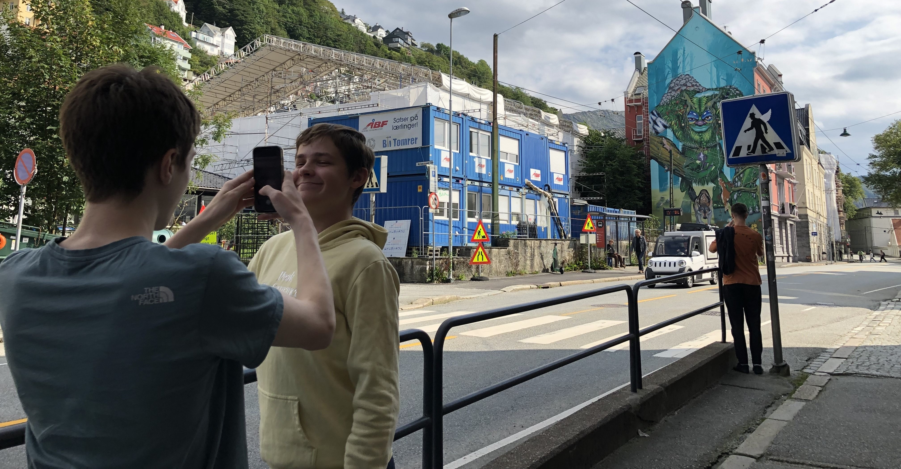

Medier og Kommunikasjon
(Studiespesialiserende)

Litt om linjen
På medier og kommunikasjon får du muligheten til å utvikle dine kreative evner.
Du lærer å kommunisere, lage og produsere innhold til avis, film, radio, TV og digitale medier. I tillegg lærer du om foto og grafisk design. Du får generell studiekompetanse, og ikke minst høy digital kompetanse.
Linijen bidrar til at du får en mer moden, teknisk og kreativ tankegang.
Hvorfor velge linjen?
Denne linijen er for deg son er interessert i design og medier.
Du Lærer
-Fortellerteknikker innen tekst, lyd og bilde
-Om mediepåvirkning, mediehistorie og journalistikk
-Å utforme budskap, uttrykk og layout
-Bruk av form, farge, lys og lyd som virkemiddel
-Å videreutvikle din digitale kompetanse
-Teoretiske fag
Egenskaper
-Kreativ og nysgjerrig
-Interessert i å lære om kommunikasjon og mediebruk
-Interessert i å lære å formidle gjennom bilder, film, lyd og ord
-Opptatt av informasjonsteknologi og digitale medier